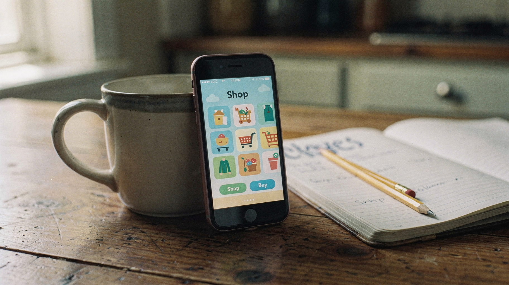

A Year in the Aisle
We spent a year building a shopping trip that behaves like a game — and then Walmart put it in front of a million players. This is how that happened, written down the way we remember it.

The whole pitch fit in a kitchen-table demo. It mostly still does.
There is a version of this story that starts in a boardroom. That is not the version we lived. The version we lived started with a question that sounds simple and is not: what if the aisle itself was the game?
Walmart asked it out loud, with Spatial and Unity at the table. In practice the question unrolled into a year of smaller questions — how a cart should feel when it is also a character, what a fitting room becomes when it is a scene, whether a million people will forgive a loading screen. A year is a long time to hold a question open. We got to keep it open because the answer kept changing shape: three episodes, each one a small world with its own weather.
Three episodes, one store
Walmart Unlimited shipped as a three-part miniseries. Each episode followed a character through a world built out of shopping — groceries that talk, shelves that rearrange themselves, a commerce hub that follows you like a helpful rumor. Milo opened the run, a story cooked up with A Dozen Cousins. Raya and Jabari carried the later chapters into beauty and self-care, which mostly meant the team learned how skin care serum works by building it in 3D.
Forty-plus artists touched the thing over roughly a year. For Walmart it was the first live test of their Unity commerce SDK — the plumbing that lets you actually buy what you are walking past. For us it was the first time our spatial-retail instincts got a stage this size. Purchases happened inside the game, through a Commerce Hub tied into Walmart’s real storefront. That detail matters. The game was never a brochure for shopping; it was shopping.
What the numbers said
Episode three pulled more than a million players. We are pointing at that number not because it is large but because of what it cost: zero installs. Nobody downloaded anything. The whole world arrived through a screen the way a page does — and stayed long enough for people to shop in it. Immersive commerce has been a slide in conference decks for a decade. This one had a receipt attached.
The trade press noticed in its own way — nine outlets wrote it up in the first weeks, from Inc. to Ad Age, each one reaching for the same word: first. First immersive gaming title, first Unity commerce SDK in the wild, first shoppable miniseries. When that many people reach for the same word, you stop arguing with it.
What we'd do again on purpose
The scrapbook version of this project has some pages we'd photocopy for the next one. Build the commerce loop early — not as a milestone, as a toy; the moment buying works inside a game, every design argument gets honest. Keep the episodes small. A world you can walk across before the coffee cools is a world people finish. And let the artists near the plumbing: half of what worked in Unlimited came from people who had never touched a commerce API deciding the checkout should feel like part of the scenery.
Adaptive retail is the industry's name for it. Our name is quieter: stores that meet you wherever you happen to be looking. The practice started in physical space and it still runs on that instinct — the room responds, the shelf answers back, the game is the aisle. Walmart Unlimited was the first time the whole idea shipped at scale. It won't be the last.
Nine outlets covered the launch window. A million players came for episode three — the receipts live in their pages, not ours.